Learning Module 6 Fixed-Income Bond Valuation: Prices and Yields - Part 1: Introduction
Volume 6: Fixed Income
Learning Module 6 Fixed-Income Bond Valuation: Prices and Yields
Part 1/2: Introduction (PDF Pages 137–152)
Tập 6: Chứng Khoán Thu Nhập Cố Định (Fixed Income)
Học phần 6: Định Giá Trái Phiếu Thu Nhập Cố Định: Giá và Lợi Suất (Fixed-Income Bond Valuation: Prices and Yields)
Phần 1/2: Giới thiệu (Trang PDF 137–152)
L E A R N I N G M O D U L E 6
H Ọ C P H Ầ N 6
Fixed-Income Bond Valuation: Prices and Yields
Định Giá Trái Phiếu Thu Nhập Cố Định: Giá và Lợi Suất (Fixed-Income Bond Valuation: Prices and Yields)
LEARNING OUTCOMES
MỤC TIÊU HỌC TẬP (LEARNING OUTCOMES)
Mastery The candidate should be able to: calculate a bond’s price given a yield-to-maturity on or between coupon dates identify the relationships among a bond’s price, coupon rate, maturity, and yield-to-maturity describe matrix pricing
Mức độ thành thạo — Ứng viên cần có khả năng: - tính toán giá của một trái phiếu khi biết lợi suất đáo hạn (yield-to-maturity) vào ngày trả lãi coupon hoặc giữa các ngày trả lãi coupon - xác định mối quan hệ giữa giá trái phiếu, lãi suất coupon (coupon rate), kỳ hạn (maturity) và lợi suất đáo hạn (yield-to-maturity) - mô tả phương pháp định giá ma trận (matrix pricing)
INTRODUCTION
GIỚI THIỆU (INTRODUCTION)
1
1
We will now use discounted cash flow analysis to calculate bond prices and show how the discount rate used as well as a bond’s features, such as its coupon rate and time-to-maturity, affect pricing. The price of a bond and its future cash flows can be used calculate an internal rate of return, known as the yield-to-maturity, which serves as a useful return measure for fixed-income investors under certain assumptions. One of these assumptions that applies to this learning module is that all bond interest and principal cash flows occur as promised. We will explore the relationship between bond prices and bond features, showing how different features affect a bond’s price, and demonstrate pricing both on and between bond coupon dates. Finally, we will introduce matrix pricing, which uses comparable bonds to estimate a bond’s price and yield-to-maturity when neither is known.
Bây giờ chúng ta sẽ sử dụng phân tích dòng tiền chiết khấu (discounted cash flow analysis) để tính toán giá trái phiếu và chỉ ra cách thức mà lãi suất chiết khấu được sử dụng cũng như các đặc tính của trái phiếu, chẳng hạn như lãi suất coupon và thời gian đáo hạn (time-to-maturity), tác động đến việc định giá. Giá của một trái phiếu và các dòng tiền tương lai của nó có thể được sử dụng để tính toán một tỷ suất hoàn vốn nội bộ (internal rate of return – IRR), được gọi là lợi suất đáo hạn (yield-to-maturity – YTM), đóng vai trò là một thước đo tỷ suất sinh lợi hữu ích cho các nhà đầu tư thu nhập cố định dưới những giả định nhất định. Một trong những giả định áp dụng cho học phần này là tất cả các dòng tiền lãi và gốc của trái phiếu đều diễn ra đúng như cam kết. Chúng ta sẽ khám phá mối quan hệ giữa giá trái phiếu và các đặc tính của trái phiếu, chỉ ra cách các đặc tính khác nhau ảnh hưởng đến giá trái phiếu, đồng thời minh họa việc định giá vào đúng ngày trả lãi coupon cũng như giữa các ngày trả lãi coupon. Cuối cùng, chúng ta sẽ giới thiệu phương pháp định giá ma trận (matrix pricing), sử dụng các trái phiếu tương đương (comparable bonds) để ước tính giá và lợi suất đáo hạn của một trái phiếu khi chưa biết cả hai thông số này.
Most of the examples and exhibits used throughout the reading can be downloaded as a Microsoft Excel workbook. Each worksheet in the workbook is labeled with the corresponding example or exhibit number in the text.
Hầu hết các ví dụ và bảng minh họa được sử dụng xuyên suốt bài đọc này có thể được tải xuống dưới dạng sổ làm việc Microsoft Excel. Mỗi trang tính trong sổ làm việc được gắn nhãn với số thứ tự ví dụ hoặc bảng minh họa tương ứng trong bài học.
LEARNING MODULE OVERVIEW
TỔNG QUAN HỌC PHẦN (LEARNING MODULE OVERVIEW)
- Bond pricing is an application of discounted cash flow analysis. Bond prices are a function of a bond’s features, including its cash flows and the interest rate(s) used to discount future cash flows.
- Định giá trái phiếu là một ứng dụng của phân tích dòng tiền chiết khấu (discounted cash flow analysis). Giá trái phiếu là một hàm số phụ thuộc vào các đặc tính của trái phiếu, bao gồm các dòng tiền của nó và (các) mức lãi suất được sử dụng để chiết khấu các dòng tiền tương lai.
-
By comparing a bond’s price to its face value or its coupon rate to the discount rate, we can identify whether a bond is trading at a discount, at par, or at a premium.
-
If the market price of a bond is known, an internal rate of return on the cash flows can be calculated, known as the yield-to-maturity (YTM). The YTM is the single interest rate that equates the present value of future cash flows to the price of the bond.
-
A bond investor’s rate of return will equal the YTM if (1) the investor holds the bond to maturity, (2) the issuer makes full coupon and principal payments on the scheduled dates, and (3) the investor reinvests all coupon payments at the same YTM.
-
When a bond is priced or traded in between coupon dates, an additional amount must be added for interest that has accrued since the last coupon payment, to compensate the seller, since the buyer will receive the entire next coupon payment.
-
To calculate a bond’s accrued interest on any date, we multiply the coupon by the fraction of days elapsed in the coupon period divided by the total days in the coupon period. There are various conventions for counting these days; two common conventions are actual/actual and 30/360.
-
A bond’s price changes inversely with changes in its YTM. A bond’s features determine price sensitivity to changes in YTM.
-
The lower the coupon rate on a fixed-coupon bond, the greater the percentage price change for a given change in the bond’s yield-to-maturity. Generally, the longer a bond’s time-to-maturity, the greater its percentage price change for a given change in its yield-to-maturity.
-
Unlike listed equity securities, most bonds are thinly traded, which complicates price discovery.
-
Matrix pricing is a price estimation process for new or illiquid bonds that uses yields on securities with the same or similar features. Matrix pricing is widely used in price quotations for bonds.
-
Bằng cách so sánh giá của một trái phiếu với mệnh giá (face value) của nó hoặc so sánh lãi suất coupon với lãi suất chiết khấu, chúng ta có thể xác định liệu một trái phiếu đang được giao dịch ở mức chiết khấu (at a discount), ngang giá (at par) hay ở mức phần bù/thặng dư (at a premium).
-
Nếu biết giá thị trường của một trái phiếu, ta có thể tính được tỷ suất hoàn vốn nội bộ của các dòng tiền, được gọi là lợi suất đáo hạn (yield-to-maturity – YTM). YTM là mức lãi suất đơn nhất làm cân bằng giá trị hiện tại của các dòng tiền tương lai với giá của trái phiếu.
-
Tỷ suất sinh lợi của một nhà đầu tư trái phiếu sẽ bằng với YTM nếu (1) nhà đầu tư nắm giữ trái phiếu đến khi đáo hạn, (2) tổ chức phát hành thực hiện đầy đủ các khoản thanh toán coupon và gốc vào đúng các ngày theo lịch trình, và (3) nhà đầu tư tái đầu tư tất cả các khoản thanh toán coupon ở cùng mức lãi suất YTM đó.
-
Khi một trái phiếu được định giá hoặc giao dịch ở giữa các ngày trả lãi coupon, một khoản tiền bổ sung phải được cộng thêm cho phần tiền lãi đã tích lũy kể từ lần thanh toán coupon gần nhất nhằm đền bù cho người bán, bởi vì người mua sẽ nhận được toàn bộ khoản thanh toán coupon tiếp theo.
-
Để tính lãi tích lũy (accrued interest) của một trái phiếu vào bất kỳ ngày nào, chúng ta nhân khoản thanh toán coupon với tỷ lệ số ngày đã trôi qua trong kỳ trả lãi chia cho tổng số ngày trong kỳ trả lãi đó. Có nhiều quy ước khác nhau để đếm số ngày này; hai quy ước phổ biến là thực tế/thực tế (actual/actual) và 30/360.
-
Giá của một trái phiếu biến đổi ngược chiều với những thay đổi trong YTM của nó. Các đặc tính của trái phiếu quyết định độ nhạy của giá trước những thay đổi trong YTM.
-
Lãi suất coupon của một trái phiếu trả lãi cố định càng thấp thì phần trăm thay đổi giá càng lớn đối với một mức thay đổi nhất định trong lợi suất đáo hạn của trái phiếu. Nhìn chung, thời gian đáo hạn của một trái phiếu càng dài thì phần trăm thay đổi giá của nó càng lớn đối với một mức thay đổi nhất định trong lợi suất đáo hạn.
-
Không giống như các chứng khoán vốn cổ phần niêm yết, hầu hết các trái phiếu được giao dịch thưa thớt (thinly traded), làm phức tạp hóa quá trình khám phá giá (price discovery).
-
Định giá ma trận (matrix pricing) là một quy trình ước tính giá cho các trái phiếu mới hoặc kém thanh khoản bằng cách sử dụng lợi suất của các chứng khoán có cùng đặc tính hoặc có đặc tính tương tự. Định giá ma trận được sử dụng rộng rãi trong việc báo giá trái phiếu.
LEARNING MODULE SELF-ASSESSMENT
TỰ ĐÁNH GIÁ HỌC PHẦN (LEARNING MODULE SELF-ASSESSMENT)
These initial questions are intended to help you gauge your current level of understanding of the learning module.
- A corporate bond that matures on 1 January 2035 pays semiannual coupons of 3.25% per year and has a face value of 100. The market discount rate is 4.0%. For a trade settlement date of 1 January 2030, the price of the bond as a percentage of par value, assuming a 30/360 day count, is closest to:
-
A. 96.632.
-
B. 96.661.
Các câu hỏi ban đầu này nhằm giúp bạn đánh giá mức độ hiểu biết hiện tại của mình về học phần này.
C. 103.436.
- Một trái phiếu doanh nghiệp đáo hạn vào ngày 1 tháng 1 năm 2035 trả lãi coupon bán niên ở mức 3,25%/năm và có mệnh giá là 100. Lãi suất chiết khấu thị trường (market discount rate) là 4,0%. Đối với ngày thanh toán giao dịch (trade settlement date) là ngày 1 tháng 1 năm 2030, giá của trái phiếu tính theo phần trăm mệnh giá, giả định quy ước đếm ngày 30/360, gần nhất với:
-
A. 96,632.
-
B. 96,661.
-
C. 103,436.
-
Lời giải:
- Solution:
A is correct. The bond price is the sum of the coupon and principal payments discounted at the market discount rate.
A là đáp án đúng. Giá trái phiếu là tổng các khoản thanh toán coupon và gốc được chiết khấu theo lãi suất chiết khấu thị trường.
PV = PMT 1/(1 + r )1 + PMT 2/(1 + r )2 + … + ( PMTN + FVN )/(1 + r )N , where
trong đó:
PMT =1.625 r = 0.02 FV = 100 N = 10 1.625 _1.625 _1.625 _1.625 _1.625_PV= (1 + 0.02)1+ (1 + 0.02)2+ (1 + 0.02)3+ (1 + 0.02)4+ (1 + 0.02)5+ _ (1 + 0.02) 1.6256+ _ (1 + 0.02) 1.6257+ _ (1 + 0.02) 1.6258+ _ (1 + 0.02) 1.6259+ _ (1 + 0.02)101.62510 PV = 96.632. Note: Quantities in the calculation are not rounded, though they are shown with three decimal places for presentation purposes. Solutions are rounded to three decimal places.
$PMT = 1{,}625$, $r = 0{,}02$, $FV = 100$, $N = 10$
The calculation can also be done using the PV or PRICE functions in Microsoft Excel and Google Sheets:
Lưu ý: Các đại lượng trong phép tính không được làm tròn trong quá trình tính toán, mặc dù chúng được hiển thị với ba chữ số thập phân cho mục đích trình bày. Kết quả cuối cùng được làm tròn đến ba chữ số thập phân.
Phép tính này cũng có thể được thực hiện bằng hàm PV hoặc PRICE trong Microsoft Excel và Google Sheets:
~~=-PV(rate, nper, pmt, [FV], type)~~ =-PV(0.02,10,1.625,100,0) = 96.632 ~~=PRICE(settlement, maturity, rate, yield, redemption, frequency, [basis])~~ =PRICE(DATE(2030,1,1),DATE(2035,1,1),0.0325,0.04,100,2) = 96.632
=-PV(rate, nper, pmt, [FV], type)
=-PV(0.02,10,1.625,100,0) = 96.632
- Which of the following is not required for a bond investor’s rate of return on a bond investment to equal the bond’s YTM? A. The bond is held to maturity. B. The issuer may default on one, but only one, coupon payment. C. Coupon payments are reinvested at the same rate as the YTM.
=PRICE(settlement, maturity, rate, yield, redemption, frequency, [basis])
=PRICE(DATE(2030,1,1),DATE(2035,1,1),0.0325,0.04,100,2) = 96.632
Solution:
- Điều nào sau đây không bắt buộc để tỷ suất sinh lợi của một nhà đầu tư trái phiếu trên khoản đầu tư trái phiếu bằng với YTM của trái phiếu đó? - A. Trái phiếu được nắm giữ đến khi đáo hạn. - B. Tổ chức phát hành có thể vỡ nợ đối với một, nhưng chỉ một, khoản thanh toán coupon. - C. Các khoản thanh toán coupon được tái đầu tư ở cùng mức lãi suất với YTM.
B is correct. For a bond investor to earn the YTM, the issuer must make all coupon and principal payments on their scheduled dates.
Lời giải:
B là đáp án đúng. Để một nhà đầu tư trái phiếu đạt được mức sinh lợi bằng YTM, tổ chức phát hành phải thực hiện tất cả các khoản thanh toán coupon và gốc vào đúng các ngày theo lịch trình.
A is incorrect because a bond investor does have to hold the bond to maturity to earn the YTM. C is incorrect because a bond investor does have to reinvest coupons at the same rate as the YTM to earn the YTM.
A không đúng vì nhà đầu tư trái phiếu bắt buộc phải nắm giữ trái phiếu đến khi đáo hạn để đạt được YTM. C không đúng vì nhà đầu tư trái phiếu bắt buộc phải tái đầu tư các khoản coupon ở cùng mức lãi suất với YTM để đạt được YTM.
- A three-year sovereign bond issued on 1 January 2030 pays semiannual coupons of 1.5% per year on 30 June and 31 December each year and has a face value of 100. The market discount rate is 2.0%. For a trade settlement date
- Một trái phiếu chính phủ trung ương kỳ hạn 3 năm được phát hành vào ngày 1 tháng 1 năm 2030 trả lãi coupon bán niên ở mức 1,5%/năm vào ngày 30 tháng 6 và ngày 31 tháng 12 hàng năm và có mệnh giá là 100. Lãi suất chiết khấu thị trường là 2,0%. Đối với ngày thanh toán giao dịch
of 29 August 2031, the flat price of the bond as a percentage of par value, assuming an actual/actual day count, is closest to:
là ngày 29 tháng 8 năm 2031, giá tịnh (flat price) của trái phiếu tính theo phần trăm mệnh giá, giả định quy ước đếm ngày thực tế/thực tế (actual/actual), gần nhất với:
A. 99,343.
A. 99.343.
B. 99,587.
B. 99.587. C. 99.832. Solution:
C. 99,832.
A is correct. The flat price is the full price less accrued interest. The full price is the present value as of the trade settlement date, which involves partial payment periods because we’re between coupon dates.
Lời giải:
A là đáp án đúng. Giá tịnh (flat price) bằng giá gộp (full price) trừ đi lãi tích lũy (accrued interest). Giá gộp là giá trị hiện tại tính tại ngày thanh toán giao dịch, bao gồm các kỳ thanh toán lẻ bởi vì chúng ta đang ở giữa các ngày trả lãi coupon.
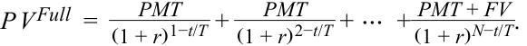
Here,
Ở đây:
PMT = 0.75
$PMT = 0{,}75$
r = 0.01
$r = 0{,}01$
t = 60 (days from 30 June 2031 to 29 August 2031)
$t = 60$ (số ngày từ 30 tháng 6 năm 2031 đến 29 tháng 8 năm 2031)
T = 184 (days from 30 June 2031 to next coupon on 31 December 2031)
$T = 184$ (số ngày từ 30 tháng 6 năm 2031 đến kỳ trả lãi tiếp theo vào ngày 31 tháng 12 năm 2031)
FV = 100
$FV = 100$
N = 3
$N = 3$
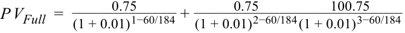
P VFull = 99.587.
$PV^{Full} = 99{,}587$.
Accrued interest is the proportional share of the next coupon payment owed the seller.
Lãi tích lũy (accrued interest) là phần tỷ lệ tương ứng của khoản thanh toán coupon tiếp theo thuộc về người bán.
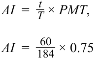
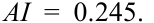
The flat price is 99.587 – 0.245 = 99.343.
Giá tịnh (flat price) là $99{,}587 - 0{,}245 = 99{,}343$.
The present value calculations can also be done easily on spreadsheet software. Additionally, the PRICE function in Microsoft Excel and Google Sheets can be used to directly solve for the flat price (note: not full prices).
Các phép tính giá trị hiện tại cũng có thể được thực hiện dễ dàng trên phần mềm bảng tính. Ngoài ra, hàm PRICE trong Microsoft Excel và Google Sheets có thể được sử dụng để giải trực tiếp giá tịnh (lưu ý: không phải giá gộp).
~~=PRICE(~~ ~~settlement, maturity, rate, yield, redemption, frequency, [basis]~~ ~~)~~
=PRICE(settlement, maturity, rate, yield, redemption, frequency, [basis])
=PRICE(DATE(2031,8,29),DATE(2032,12,31),0.015,0.02,100,2)
=PRICE(DATE(2031,8,29),DATE(2032,12,31),0.015,0.02,100,2)
= 99.343.
= 99.343.
- True or false: A bond’s quoted price is also called its full price because it is the amount that the buyer pays the seller.
- Đúng hay sai: Giá yết (quoted price) của một trái phiếu còn được gọi là giá gộp (full price) bởi vì đó là số tiền mà người mua trả cho người bán.
A. True
A. Đúng (True)
B. False Solution: False. A bond is quoted by its flat price. The full price is the amount paid by the buyer to the seller, and it includes accrued interest if settlement does not occur on a coupon payment date. 5. Assume that the Japanese government issues two non-callable fixed-coupon bonds on the same date with the same coupon rate. The bonds are identical except that one matures in 10 years and the other matures in 30 years. If the relevant market discount rates for both bonds rise by 65 bps, which of the following will be true? A. The 10-year bond will have a larger percentage price change than the 30-year bond. B. The 10-year bond will have a smaller percentage price change than the 30-year bond. C. The 10-year bond and the 30-year bond will have equal percentage price changes. Solution: B is correct. Generally, for the same coupon rate, a shorter-term bond will have a smaller percentage price change than a longer-term bond when their relevant market discount rates change by the same amount. A is incorrect because generally a shorter-term bond will have a smaller percentage price change than a longer-term bond when their market discount rates change by the same amount. C is incorrect because shorter-term bonds and longer-term bonds will not have the same percentage price changes when their market discount rates change by the same amount. 6. True or false. Justify your answer. Matrix pricing is an estimation process in which quotes from derivative markets (e.g., interest rates swaps) are used to determine the price of illiquid or new bonds for which transactional data are scarce. A. True B. False Solution: False. Matrix pricing is a process for estimating prices of illiquid or newly issued bonds using prices of comparable bonds, not from transactions in derivative markets. The comparable bonds have similar times-to-maturity, coupon rates, and credit quality as those of the bond under study.
B. Sai (False)
Lời giải: Sai. Một trái phiếu được yết giá theo giá tịnh (flat price) của nó. Giá gộp (full price) là số tiền mà người mua thực trả cho người bán, và nó bao gồm cả lãi tích lũy nếu việc thanh toán không diễn ra vào đúng ngày trả lãi coupon.
- Giả sử chính phủ Nhật Bản phát hành hai trái phiếu trả lãi cố định không kèm quyền mua lại trước hạn (non-callable fixed-coupon bonds) vào cùng một ngày với cùng mức lãi suất coupon. Hai trái phiếu này hoàn toàn giống hệt nhau ngoại trừ việc một trái phiếu đáo hạn sau 10 năm và trái phiếu kia đáo hạn sau 30 năm. Nếu lãi suất chiết khấu thị trường có liên quan của cả hai trái phiếu cùng tăng thêm 65 bps, phát biểu nào sau đây sẽ đúng? - A. Trái phiếu kỳ hạn 10 năm sẽ có phần trăm thay đổi giá lớn hơn so với trái phiếu kỳ hạn 30 năm. - B. Trái phiếu kỳ hạn 10 năm sẽ có phần trăm thay đổi giá nhỏ hơn so với trái phiếu kỳ hạn 30 năm. - C. Trái phiếu kỳ hạn 10 năm và trái phiếu kỳ hạn 30 năm sẽ có phần trăm thay đổi giá bằng nhau.
Lời giải: B là đáp án đúng. Nhìn chung, với cùng một mức lãi suất coupon, một trái phiếu có kỳ hạn ngắn hơn sẽ có phần trăm thay đổi giá nhỏ hơn so với một trái phiếu có kỳ hạn dài hơn khi lãi suất chiết khấu thị trường có liên quan của chúng thay đổi cùng một lượng. A không đúng vì nhìn chung trái phiếu ngắn hạn hơn sẽ có phần trăm thay đổi giá nhỏ hơn so với trái phiếu dài hạn hơn khi lãi suất chiết khấu thị trường của chúng thay đổi cùng một lượng. C không đúng vì trái phiếu ngắn hạn hơn và trái phiếu dài hạn hơn sẽ không có cùng phần trăm thay đổi giá khi lãi suất chiết khấu thị trường của chúng thay đổi cùng một lượng.
calculate a bond’s price given a yield-to-maturity on or between coupon dates
- Đúng hay sai. Giải thích câu trả lời của bạn. Định giá ma trận (matrix pricing) là một quy trình ước tính trong đó các báo giá từ thị trường phái sinh (ví dụ: hợp đồng hoán đổi lãi suất) được sử dụng để xác định giá của các trái phiếu kém thanh khoản hoặc mới phát hành vốn khan hiếm dữ liệu giao dịch. - A. Đúng (True) - B. Sai (False)
Lời giải: Sai. Định giá ma trận là một quy trình ước tính giá của các trái phiếu kém thanh khoản hoặc mới phát hành bằng cách sử dụng giá của các trái phiếu tương đương (comparable bonds), chứ không phải từ các giao dịch trên thị trường phái sinh. Các trái phiếu tương đương có thời gian đáo hạn, lãi suất coupon và chất lượng tín dụng tương tự như trái phiếu đang được nghiên cứu.
2 ĐỊNH GIÁ TRÁI PHIẾU VÀ LỢI SUẤT ĐÁO HẠN (BOND PRICING AND YIELD-TO-MATURITY)
tính toán giá của một trái phiếu khi biết lợi suất đáo hạn (yield-to-maturity) vào ngày trả lãi coupon hoặc giữa các ngày trả lãi coupon
Bond Pricing with a Market Discount Rate
Định Giá Trái Phiếu Với Lãi Suất Chiết Khấu Thị Trường (Bond Pricing with a Market Discount Rate)
Bond pricing is an application of discounted cash flow analysis that depends on a bond’s cash flow features and the rate (or rates) used for discounting. Recall from an earlier lesson that the price of the bond at issuance is the present value of the promised interest and principal cash flows. The market discount rate is used in the time-value-of-money calculation to obtain the present value. The market discount rate is the rate of return required by investors given the risk of the bond investment. It is also called the required yield , or the required rate of return .
Định giá trái phiếu là một ứng dụng của phân tích dòng tiền chiết khấu phụ thuộc vào các đặc tính dòng tiền của trái phiếu và mức lãi suất (hoặc các mức lãi suất) được sử dụng để chiết khấu. Hãy nhớ lại từ bài học trước rằng giá của trái phiếu tại thời điểm phát hành là giá trị hiện tại của các dòng tiền lãi và gốc đã cam kết. Lãi suất chiết khấu thị trường được sử dụng trong phép tính giá trị thời gian của tiền tệ để thu được giá trị hiện tại. Lãi suất chiết khấu thị trường (market discount rate) là tỷ suất sinh lợi mà các nhà đầu tư yêu cầu dựa trên mức độ rủi ro của khoản đầu tư trái phiếu. Nó còn được gọi là lợi suất yêu cầu (required yield), hoặc tỷ suất sinh lợi yêu cầu (required rate of return).
The present value ( PV ) calculation for each bond coupon cash flow ( PMT ) that occurs in t periods with a market discount rate of r per period should be familiar from an earlier time-value-of-money lesson:
Phép tính giá trị hiện tại ($PV$) cho mỗi dòng tiền coupon của trái phiếu ($PMT$) phát sinh sau $t$ kỳ với lãi suất chiết khấu thị trường là $r$ mỗi kỳ hẳn đã quen thuộc từ bài học trước về giá trị thời gian của tiền tệ:
PV (Bond coupon) = PMTt /(1 + r )t . ~~(1)~~
Equation 2 extends this calculation in a general formula for calculating a bond price ( PV ) given the market discount rate on a coupon date:
Phương trình 2 mở rộng phép tính này thành một công thức tổng quát để tính giá trái phiếu ($PV$) khi biết lãi suất chiết khấu thị trường vào một ngày trả lãi coupon:
PV = PMT 1/(1 + r )1 + PMT 2/(1 + r )2 + … + ( PMTN + FVN )/(1 + r )N , ~~(2)~~
where FV is equal to the bond’s face value and N is the number of periods to maturity.
trong đó $FV$ bằng mệnh giá của trái phiếu và $N$ là số kỳ cho đến khi đáo hạn.
Recall the Bright Wheels Automotive (BRWA) bond introduced in an earlier lesson. The bond’s price was 100% of face or par value because the market discount rate, r , and the bond’s fixed coupon rate, PMT , were equal (at 3.2% per annum, or 1.6% semiannually). We will now consider cases where the bond’s coupon rate and the market discount rate are not equal.
Hãy nhớ lại trái phiếu của Bright Wheels Automotive (BRWA) đã được giới thiệu trong bài học trước. Giá của trái phiếu đó bằng 100% mệnh giá (face or par value) bởi vì lãi suất chiết khấu thị trường, $r$, và lãi suất coupon cố định của trái phiếu, $PMT$, bằng nhau (ở mức 3,2%/năm, hay 1,6% mỗi nửa năm). Bây giờ chúng ta sẽ xem xét các trường hợp trong đó lãi suất coupon của trái phiếu và lãi suất chiết khấu thị trường không bằng nhau.
EXAMPLE 1
VÍ DỤ 1 (EXAMPLE 1)
| BR | WA Par, | Disco | unt, a | nd Pr | emiu | m Bo | nd | |||
|---|---|---|---|---|---|---|---|---|---|---|
| Period: | 1 | 2 | 3 | 4 | 5 | 6 | 7 | 8 | 9 | 10 |
| Cash Flow: | 1.6 | 1.6 | 1.6 | 1.6 | 1.6 | 1.6 | 1.6 | 1.6 | 1.6 | 101.6 |
| PV of Cash Flow at 1.2% periodic YTM: | 1.6 | 1.6 | 1.5 | 1.5 | 1.5 | 1.5 | 1.5 | 1.5 | 1.4 | 90.2 |
| Bond price (sum): | 103.75 | |||||||||
| PV of Cash Flow at 1.6% periodic YTM: | 1.6 | 1.6 | 1.5 | 1.5 | 1.5 | 1.5 | 1.4 | 1.4 | 1.4 | 86.7 |
| Bond price: | 100.00 | |||||||||
| PV of Cash Flow at 2.0% periodic YTM: | 1.6 | 1.5 | 1.5 | 1.5 | 1.4 | 1.4 | 1.4 | 1.4 | 1.3 | 83.3 |
| Bondprice: | 96.41 |
| Trái Phiếu Ngang Giá, Chiết Khấu và Phần Bù của BRWA (BRWA Par, Discount, and Premium Bond) | ||||||||||
|---|---|---|---|---|---|---|---|---|---|---|
| Kỳ (Period): | 1 | 2 | 3 | 4 | 5 | 6 | 7 | 8 | 9 | 10 |
| Dòng tiền (Cash Flow): | 1,6 | 1,6 | 1,6 | 1,6 | 1,6 | 1,6 | 1,6 | 1,6 | 1,6 | 101,6 |
| PV của Dòng tiền tại YTM định kỳ 1,2%: | 1,6 | 1,6 | 1,5 | 1,5 | 1,5 | 1,5 | 1,5 | 1,5 | 1,4 | 90,2 |
| Giá trái phiếu (tổng): | 103,75 | |||||||||
| PV của Dòng tiền tại YTM định kỳ 1,6%: | 1,6 | 1,6 | 1,5 | 1,5 | 1,5 | 1,5 | 1,4 | 1,4 | 1,4 | 86,7 |
| Giá trái phiếu: | 100,00 | |||||||||
| PV của Dòng tiền tại YTM định kỳ 2,0%: | 1,6 | 1,5 | 1,5 | 1,5 | 1,4 | 1,4 | 1,4 | 1,4 | 1,3 | 83,3 |
| Giá trái phiếu: | 96,41 |
Note: Please refer to the candidate learning ecosystem online for a spreadsheet of these calculations in the downloaded Microsoft Excel workbook.
Lưu ý: Vui lòng tham khảo hệ sinh thái học tập dành cho ứng viên trực tuyến để xem bảng tính của các phép tính này trong sổ làm việc Microsoft Excel được tải xuống.
If the market discount rate rises to 2% semiannually, new bonds to be issued at par must provide coupon rates that are also 2% semiannually. The previously issued BRWA bond pays coupons at a 1.6% rate, so it should have a lower price than a bond that pays 2%. We could say that the BRWA bond’s 1.6% coupon rate is deficient relative to the higher 2% market discount rate. The market price of the BRWA bond, with its lower coupon, will therefore fall below 100% of par. Example 1 shows that when we discount the BRWA bond cash flows at a market discount rate of 2%, we calculate a price of 96.41. This lower price compensates for a coupon rate below the market discount rate. When a bond’s price is less than 100, we say that the bond trades at a discount. (This use of “discount” when referring to the bond price is not connected to the use of “discount” in market discount rates). Exhibit 1 illustrates a bond trading at a discount.
Nếu lãi suất chiết khấu thị trường tăng lên mức 2% mỗi nửa năm, các trái phiếu mới được phát hành ngang giá phải cung cấp mức lãi suất coupon cũng là 2% mỗi nửa năm. Trái phiếu BRWA đã phát hành trước đó trả lãi coupon ở mức 1,6%, vì vậy nó phải có mức giá thấp hơn so với một trái phiếu trả lãi 2%. Chúng ta có thể nói rằng mức lãi suất coupon 1,6% của trái phiếu BRWA là thiếu hụt (deficient) so với mức lãi suất chiết khấu thị trường cao hơn là 2%. Do đó, giá thị trường của trái phiếu BRWA, với mức coupon thấp hơn, sẽ giảm xuống dưới 100% mệnh giá. Ví dụ 1 cho thấy khi chúng ta chiết khấu các dòng tiền của trái phiếu BRWA theo lãi suất chiết khấu thị trường là 2%, chúng ta tính được mức giá là 96,41. Mức giá thấp hơn này bù đắp cho mức lãi suất coupon thấp hơn lãi suất chiết khấu thị trường. Khi giá của một trái phiếu nhỏ hơn 100, chúng ta nói rằng trái phiếu đó giao dịch ở mức chiết khấu (trades at a discount). (Cách dùng từ “chiết khấu” [discount] khi nói đến giá trái phiếu không liên quan đến cách dùng từ “chiết khấu” trong lãi suất chiết khấu thị trường). Bảng minh họa 1 minh họa một trái phiếu đang giao dịch ở mức chiết khấu.
Exhibit 1: Discount Bond Cash Flows
Bảng minh họa 1: Dòng Tiền của Trái Phiếu Chiết Khấu (Exhibit 1: Discount Bond Cash Flows)
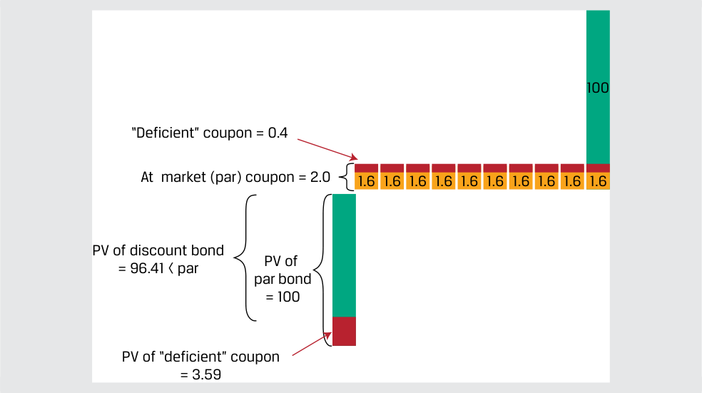
Chú thích hình ảnh: Dòng tiền của trái phiếu chiết khấu (Discount Bond Cash Flows): - Mệnh giá hoàn trả cuối kỳ = 100. - Coupon theo thị trường (ngang giá) (At market (par) coupon) = 2,0 mỗi kỳ; Coupon thực trả = 1,6 mỗi kỳ; Phần coupon “thiếu hụt” (“Deficient” coupon) = 0,4 mỗi kỳ. - Giá trị hiện tại của trái phiếu ngang giá (PV of par bond) = 100; trừ đi Giá trị hiện tại của phần coupon “thiếu hụt” (PV of “deficient” coupon) = 3,59; bằng Giá trị hiện tại của trái phiếu chiết khấu (PV of discount bond) = 96,41 < mệnh giá (par).
We now consider how the price of the existing BRWA bond will change if the market discount rate falls to 1.2%. A similar bond (five-year maturity, semi-annual coupon) issued when the five-year market discount rate is 1.2% semiannually will also have a semi-annual coupon rate of 1.2% so that its price will be 100% of par. Because the BRWA bond pays a higher coupon rate of 1.6%, its price should be higher than that of a bond that pays only 1.2%. We could say that the BRWA bond’s 1.6% coupon rate is excessive relative to the lower 1.2% market discount rate. Therefore, the BRWA bond’s price rises as the market discount rate falls. When we discount the cash flows of the BRWA bond at the market discount rate of 1.2% and then add them up, we calculate a bond price equal to 103.73% of par. It has a higher price than the 1.2% coupon bond because it pays a higher coupon. Exhibit 2 illustrates a bond trading at a premium.
Bây giờ chúng ta xem xét giá của trái phiếu BRWA hiện hữu sẽ thay đổi như thế nào nếu lãi suất chiết khấu thị trường giảm xuống còn 1,2%. Một trái phiếu tương tự (kỳ hạn 5 năm, trả lãi coupon bán niên) được phát hành khi lãi suất chiết khấu thị trường kỳ hạn 5 năm ở mức 1,2% mỗi nửa năm cũng sẽ có lãi suất coupon bán niên là 1,2% để giá của nó bằng 100% mệnh giá. Bởi vì trái phiếu BRWA trả mức lãi suất coupon cao hơn là 1,6%, giá của nó phải cao hơn giá của một trái phiếu chỉ trả 1,2%. Chúng ta có thể nói rằng mức lãi suất coupon 1,6% của trái phiếu BRWA là vượt trội/dư thừa (excessive) so với mức lãi suất chiết khấu thị trường thấp hơn là 1,2%. Do đó, giá của trái phiếu BRWA tăng lên khi lãi suất chiết khấu thị trường giảm xuống. Khi chúng ta chiết khấu các dòng tiền của trái phiếu BRWA theo lãi suất chiết khấu thị trường 1,2% rồi cộng chúng lại, chúng ta tính được giá trái phiếu bằng 103,75% (trong văn bản gốc ghi 103,73% do làm tròn trung gian, bảng tính chính xác là 103,75%) mệnh giá. Nó có mức giá cao hơn trái phiếu coupon 1,2% bởi vì nó trả mức coupon cao hơn. Bảng minh họa 2 minh họa một trái phiếu đang giao dịch ở mức phần bù/thặng dư (at a premium).
Exhibit 2: Premium Bond Cash Flows
Bảng minh họa 2: Dòng Tiền của Trái Phiếu Phần Bù (Exhibit 2: Premium Bond Cash Flows)
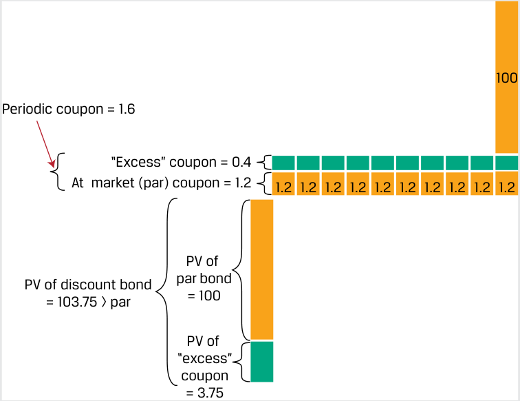
Chú thích hình ảnh: Dòng tiền của trái phiếu phần bù (Premium Bond Cash Flows): - Mệnh giá hoàn trả cuối kỳ = 100. - Coupon định kỳ (Periodic coupon) = 1,6; Coupon theo thị trường (ngang giá) (At market (par) coupon) = 1,2; Phần coupon “vượt trội” (“Excess” coupon) = 0,4 mỗi kỳ. - Giá trị hiện tại của trái phiếu ngang giá (PV of par bond) = 100; cộng với Giá trị hiện tại của phần coupon “vượt trội” (PV of “excess” coupon) = 3,75; bằng Giá trị hiện tại của trái phiếu phần bù = 103,75 > mệnh giá (par).
The PV function in Microsoft Excel or Google Sheets may also be used for the price calculation:
Hàm PV trong Microsoft Excel hoặc Google Sheets cũng có thể được sử dụng để tính giá:
~~=PV(rate, nper, pmt, FV, type)~~ ,
=PV(rate, nper, pmt, FV, type),
where
trong đó:
rate is the market discount rate per period
rate là lãi suất chiết khấu thị trường mỗi kỳ
nper is the number of periods
nper là tổng số kỳ
pmt is the periodic coupon payment
pmt là khoản thanh toán coupon định kỳ
FV is future or face value
FV là giá trị tương lai hay mệnh giá
type corresponds to payments made at the end (0) or beginning (1) of each period
type tương ứng với các khoản thanh toán được thực hiện vào cuối mỗi kỳ (0) hoặc đầu mỗi kỳ (1)
The discount, premium, and par relationships are summarized in Exhibit 3.
Các mối quan hệ chiết khấu (discount), phần bù (premium) và ngang giá (par) được tóm tắt trong Bảng minh họa 3.
Exhibit 3: Fixed-Rate Discount, Premium, and Par Bonds
Bảng minh họa 3: Trái Phiếu Lãi Suất Cố Định Giao Dịch ở Mức Chiết Khấu, Phần Bù và Ngang Giá (Exhibit 3: Fixed-Rate Discount, Premium, and Par Bonds)
| Bond Price |
Price vs. Future Value | Coupon vs. Market Discount Rate |
|---|---|---|
| Par | PV = FV | PMT = Market discount rate |
| Discount | PV < FV | PMT < Market discount rate |
| Premium | PV > FV | PMT > Market discount rate |
| Giá Trái Phiếu (Bond Price) | Giá so với Giá Trị Tương Lai (Price vs. Future Value) | Coupon so với Lãi Suất Chiết Khấu Thị Trường (Coupon vs. Market Discount Rate) |
|---|---|---|
| Ngang giá (Par) | $PV = FV$ | $PMT =$ Lãi suất chiết khấu thị trường |
| Chiết khấu (Discount) | $PV < FV$ | $PMT <$ Lãi suất chiết khấu thị trường |
| Phần bù (Premium) | $PV > FV$ | $PMT >$ Lãi suất chiết khấu thị trường |
The interest rates per period are annualized by multiplying the rate per period by the number of periods in a year. Therefore, an equivalent statement is that the BRWA bond is priced at a premium because its stated annual coupon rate of 3.2% is greater than the stated annual market discount rate of 2.4%. Unless stated otherwise, interest rates are typically quoted as annual rates.
Lãi suất mỗi kỳ được quy đổi theo năm (annualized) bằng cách nhân lãi suất mỗi kỳ với số kỳ trong một năm. Do đó, một phát biểu tương đương là trái phiếu BRWA được định giá ở mức phần bù bởi vì lãi suất coupon công bố theo năm của nó là 3,2% lớn hơn lãi suất chiết khấu thị trường công bố theo năm là 2,4%. Trừ khi có quy định khác, lãi suất thường được yết theo mức lãi suất năm.
Yield-to-Maturity
Lợi Suất Đáo Hạn (Yield-to-Maturity)
If the market price of a bond is known, Equation 2 can be used to calculate its yield-to-maturity. The yield-to-maturity is the internal rate of return on the cash flows—the uniform interest rate such that when the future cash flows are discounted at that rate, the sum of the present values equals the price of the bond. It is an implied or observed single market discount rate.
Nếu biết giá thị trường của một trái phiếu, Phương trình 2 có thể được sử dụng để tính lợi suất đáo hạn của nó. Lợi suất đáo hạn (yield-to-maturity – YTM) là tỷ suất hoàn vốn nội bộ (internal rate of return – IRR) của các dòng tiền—mức lãi suất đồng nhất sao cho khi các dòng tiền tương lai được chiết khấu theo mức lãi suất đó, tổng giá trị hiện tại sẽ bằng với giá của trái phiếu. Đó là một mức lãi suất chiết khấu thị trường đơn nhất ngầm định (implied) hoặc quan sát được (observed).
A bond investor will earn a rate of return on a bond equal to its YTM if each of the following is true:
Một nhà đầu tư trái phiếu sẽ kiếm được tỷ suất sinh lợi trên trái phiếu bằng đúng với YTM của nó nếu mỗi điều kiện sau đây đều thỏa mãn:
1. The investor holds the bond to maturity.
1. Nhà đầu tư nắm giữ trái phiếu đến khi đáo hạn.
2. The issuer makes full coupon and principal payments on scheduled dates. The YTM is the promised yield—that is, assuming no issuer default.
2. Tổ chức phát hành thực hiện đầy đủ các khoản thanh toán coupon và gốc vào đúng các ngày theo lịch trình. YTM là mức lợi suất cam kết (promised yield)—nghĩa là giả định tổ chức phát hành không vỡ nợ.
3. The investor reinvests all coupon payments at the same YTM.
3. Nhà đầu tư tái đầu tư tất cả các khoản thanh toán coupon ở cùng mức YTM đó.
For example, say we observe that the five-year 3.2% fixed-rate BRWA bond in Example 1 is priced at 108.15. The yield-to-maturity is the solution for the rate, r , in the following equation:
Ví dụ, giả sử chúng ta quan sát thấy trái phiếu BRWA lãi suất cố định 3,2% kỳ hạn 5 năm trong Ví dụ 1 được định giá ở mức 108,15. Lợi suất đáo hạn là nghiệm của lãi suất, $r$, trong phương trình sau:
108.15 = 1.6/(1 + r )1 + 1.6/(1 + r )2 + … + 101.6/(1 + r )10 .
The Microsoft Excel or Google Sheets YIELD function may be used for bonds that pay periodic interest:
Hàm YIELD trong Microsoft Excel hoặc Google Sheets có thể được sử dụng cho các trái phiếu trả lãi định kỳ:
~~=YIELD(settlement, maturity, rate, pr, redemption, frequency, [basis])~~ where
=YIELD(settlement, maturity, rate, pr, redemption, frequency, [basis]) trong đó:
settlement is the settlement date entered using the DATE function
settlement là ngày thanh toán giao dịch được nhập bằng hàm DATE
maturity is the maturity date entered using the DATE function
maturity là ngày đáo hạn được nhập bằng hàm DATE
rate is the semi-annual (or periodic) coupon
rate là lãi suất coupon bán niên (hoặc theo năm tùy chuẩn hàm; lưu ý trong Excel chuẩn hàm YIELD nhận lãi suất coupon năm, ở ví dụ dưới đây tác giả minh họa nhập 1,6% cho kỳ bán niên hoặc lãi suất tương ứng)
pr is the price per 100 face value
pr là mức giá trên mỗi 100 đơn vị mệnh giá
redemption is the future value at maturity
redemption là giá trị tương lai khi đáo hạn
frequency is the number of coupons per year
[basis] is the day-count convention, typically 0 for US bonds (30/360 day
frequency là số lần trả lãi coupon mỗi năm
count).
[basis] là quy ước đếm ngày, thường là 0 đối với trái phiếu Hoa Kỳ (đếm ngày 30/360).
If we assume the BRWA bond settles and matures on 15 October 2025 and 15 October 2030, respectively, the appropriate entries are DATE(2025,10,15) and DATE(2030,10,15). The other entries are rate = 1.6%, pr = 108.15, redemption = 100, frequency = 2, and basis = 0, as follows:
Nếu chúng ta giả định trái phiếu BRWA thanh toán và đáo hạn lần lượt vào ngày 15 tháng 10 năm 2025 và ngày 15 tháng 10 năm 2030, các thông số nhập phù hợp là DATE(2025,10,15) và DATE(2030,10,15). Các thông số khác là rate = 1,6%, pr = 108,15, redemption = 100, frequency = 2, và basis = 0, như sau:
=YIELD(DATE(2025,10,15),DATE(2030,10,15),1.6%,108.15,100,2,0)
=YIELD(DATE(2025,10,15),DATE(2030,10,15),1.6%,108.15,100,2,0)
Given a price of 108.15, the YIELD function calculates the annual yield-to- maturity for the BRWA bond to be 1.50%. Additionally, since the yield-to-maturity is an internal rate of return, we can also use the IRR function in Microsoft Excel or Google Sheets to get the same result.
Với mức giá là 108,15, hàm YIELD tính toán lợi suất đáo hạn theo năm của trái phiếu BRWA là 1,50%. Ngoài ra, vì lợi suất đáo hạn là một tỷ suất hoàn vốn nội bộ, chúng ta cũng có thể sử dụng hàm IRR trong Microsoft Excel hoặc Google Sheets để thu được kết quả tương tự.
Yield-to-maturity, commonly referred to as “yield,” is often used interchangeably with the market discount rate or required yield and in place of discussing bond prices. For example, market participants will simply say “yields are rising” rather than “market discount rates are rising” or “bond prices are falling.”
Lợi suất đáo hạn, thường được gọi tắt là “lợi suất” (yield), thường được sử dụng thay thế cho nhau với lãi suất chiết khấu thị trường hoặc lợi suất yêu cầu và thay cho việc thảo luận về giá trái phiếu. Ví dụ, các chủ thể tham gia thị trường sẽ chỉ nói đơn giản là “lợi suất đang tăng” thay vì nói “lãi suất chiết khấu thị trường đang tăng” hay “giá trái phiếu đang giảm”.
BONDS WITH NEGATIVE YIELDS-TO-MATURITY
TRÁI PHIẾU CÓ LỢI SUẤT ĐÁO HẠN ÂM (BONDS WITH NEGATIVE YIELDS-TO-MATURITY)
The yield-to-maturity on a bond may be positive, zero, or negative. Yields on many sovereign bonds fell below zero following accommodative monetary policies introduced by central banks starting in 2012 in response to below-target inflation rates. Bonds with a negative yield-to-maturity include those issued at higher yields in the past that have experienced significant price appreciation and newly issued zero-coupon sovereign government bonds priced at a premium to par value. Bonds are generally not issued with negative coupons.
Lợi suất đáo hạn của một trái phiếu có thể dương, bằng không hoặc âm. Lợi suất của nhiều trái phiếu chính phủ trung ương đã giảm xuống dưới mức không sau các chính sách tiền tệ nới lỏng (accommodative monetary policies) do các ngân hàng trung ương đưa ra bắt đầu từ năm 2012 nhằm ứng phó với tỷ lệ lạm phát thấp hơn mục tiêu. Các trái phiếu có lợi suất đáo hạn âm bao gồm những trái phiếu đã được phát hành với mức lợi suất cao hơn trong quá khứ nhưng đã trải qua sự tăng giá đáng kể, và các trái phiếu chính phủ trung ương không trả lãi định kỳ (zero-coupon) mới phát hành được định giá ở mức phần bù so với mệnh giá. Trái phiếu nhìn chung không được phát hành với lãi suất coupon âm.
In 2020, China issued its first ever negative-yielding sovereign bond denominated in euros, with terms shown in Exhibit 4.
Năm 2020, Trung Quốc đã phát hành trái phiếu chính phủ trung ương có lợi suất âm đầu tiên trong lịch sử của mình được định danh bằng đồng euro, với các điều khoản được thể hiện trong Bảng minh họa 4.
Exhibit 4: People’s Republic of China Eurobond
Bảng minh họa 4: Trái Phiếu Eurobond của Cộng Hòa Nhân Dân Trung Hoa (Exhibit 4: People’s Republic of China Eurobond)
| People | ’s Republic of China Zero-Coupon Bond Brief Summary of Terms |
|---|---|
| Issuer: | People’s Republic of China |
| Settlement Date: | November 25, 2020 |
| Maturity Date: | November 25, 2025 |
| Principal Amount: | EUR 750 million |
| Interest: | Zero coupon (ACT/ACT day count) |
| Issuance Price: | 100.763 |
| Issuance Spread: | +30 bps p.a. plus Mid Swaps |
| Trái Phiếu Không Trả Lãi Định Kỳ của Cộng Hòa Nhân Dân Trung Hoa (People’s Republic of China Zero-Coupon Bond) Tóm Tắt Ngắn Gọn Các Điều Khoản (Brief Summary of Terms) |
|
|---|---|
| Tổ chức phát hành (Issuer): | Cộng hòa Nhân dân Trung Hoa (People’s Republic of China) |
| Ngày thanh toán (Settlement Date): | 25 tháng 11 năm 2020 |
| Ngày đáo hạn (Maturity Date): | 25 tháng 11 năm 2025 |
| Mệnh giá gốc (Principal Amount): | 750 triệu EUR |
| Lãi suất (Interest): | Không trả lãi định kỳ (Zero coupon) (quy ước đếm ngày ACT/ACT) |
| Giá phát hành (Issuance Price): | 100,763 |
| Chênh lệch phát hành (Issuance Spread): | +30 bps/năm cộng với Lãi suất Hoán đổi Trung bình (Mid Swaps) |
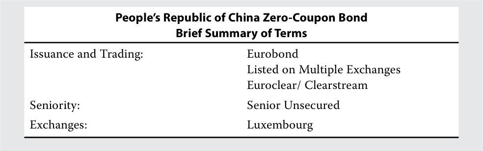
Chú thích hình ảnh: Tóm tắt điều khoản bổ sung của Trái phiếu không trả lãi định kỳ của Cộng hòa Nhân dân Trung Hoa: - Phát hành và Giao dịch (Issuance and Trading): Eurobond; Niêm yết trên nhiều sở giao dịch (Listed on Multiple Exchanges); Thanh toán bù trừ qua Euroclear/Clearstream. - Thứ tự ưu tiên trả nợ (Seniority): Trái phiếu cấp cao không có tài sản đảm bảo (Senior Unsecured). - Sở giao dịch (Exchanges): Luxembourg.
The Excel YIELD function cannot not be used for zero-coupon bonds. Instead, we solve for the annualized yield-to-maturity using Equation 1 for the single cash flow of par ( PMT = 100) after five years ( t = 5) at the original issuance price ( PV = 100.763):
Hàm YIELD trong Excel không thể sử dụng cho trái phiếu không trả lãi định kỳ (zero-coupon bonds). Thay vào đó, chúng ta giải tìm lợi suất đáo hạn theo năm bằng cách sử dụng Phương trình 1 cho dòng tiền đơn nhất bằng mệnh giá ($PMT = 100$) sau 5 năm ($t = 5$) tại mức giá phát hành ban đầu ($PV = 100{,}763$):
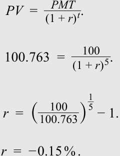
The Financial Times reported high demand for this negative-yielding Chinese bond since its yield was more than 50 bps above that of European sovereign bonds—the five-year German bund was at approximately –0.74% around the same time —and more generally because many investors sought portfolio exposure to China amid a relative scarcity of euro-denominated Chinese bonds at the time.
Tờ Financial Times đã đưa tin về nhu cầu cao đối với trái phiếu Trung Quốc có lợi suất âm này bởi vì lợi suất của nó cao hơn 50 bps so với lợi suất trái phiếu chính phủ châu Âu—trái phiếu chính phủ Đức (German bund) kỳ hạn 5 năm ở mức xấp xỉ $-0{,}74\%$ vào cùng thời điểm đó—và nhìn chung hơn là bởi vì nhiều nhà đầu tư tìm kiếm mức độ tiếp xúc danh mục đầu tư với Trung Quốc trong bối cảnh trái phiếu Trung Quốc định danh bằng đồng euro tương đối khan hiếm vào thời điểm đó.
Flat Price, Accrued Interest, and the Full Price
Giá Tịnh, Lãi Tích Lũy và Giá Gộp (Flat Price, Accrued Interest, and the Full Price)
When a bond is priced between coupon payment dates, its price has two components: the flat price ( PVFlat ) and the accrued interest ( AI ). The sum of the parts is the full price ( PVFull ), which also is known as the invoice or “dirty” price.
Khi một trái phiếu được định giá ở giữa các ngày thanh toán coupon, giá của nó có hai thành phần: giá tịnh (flat price) ($PV^{Flat}$) và lãi tích lũy (accrued interest) ($AI$). Tổng của hai thành phần này là giá gộp (full price) ($PV^{Full}$), còn được gọi là giá hóa đơn (invoice price) hay giá “bẩn” (“dirty” price).
PVFull = PVFlat + AI . ~~(3)~~
The flat price, which is the full price minus the accrued interest, is also called the quoted or “clean” price and is the type of price usually quoted by bond dealers. If a trade takes place, the accrued interest is added to the flat price to obtain the full price paid by the buyer and received by the seller on the trade settlement date . The trade settles when the bond buyer pays and the seller delivers the security.
Giá tịnh, bằng giá gộp trừ đi lãi tích lũy, còn được gọi là giá yết (quoted price) hay giá “sạch” (“clean” price) và là loại giá thường được các nhà tạo lập thị trường trái phiếu (bond dealers) niêm yết/báo giá. Nếu một giao dịch diễn ra, lãi tích lũy sẽ được cộng vào giá tịnh để thu được giá gộp mà người mua phải trả và người bán nhận được vào ngày thanh toán giao dịch (trade settlement date). Giao dịch hoàn tất thanh toán khi người mua trái phiếu trả tiền và người bán chuyển giao chứng khoán.
The flat price is used for quotations to avoid misleading investors about a bond’s market price trend. If full prices were quoted by dealers, investors would see price rises each day even if the YTM did not change due to the accrual of interest. Once a coupon payment is made, the quoted price would drop significantly, as shown in Exhibit 5.
Giá tịnh được sử dụng để báo giá nhằm tránh gây hiểu lầm cho các nhà đầu tư về xu hướng giá thị trường của trái phiếu. Nếu giá gộp được các nhà tạo lập thị trường dùng để báo giá, các nhà đầu tư sẽ thấy giá tăng lên mỗi ngày ngay cả khi YTM không thay đổi do sự tích lũy tiền lãi. Khi một khoản thanh toán coupon được thực hiện, mức giá báo sẽ sụt giảm mạnh, như được thể hiện trong Bảng minh họa 5.
Exhibit 5: Flat Price, Accrued Interest, and Full Price
Bảng minh họa 5: Giá Tịnh, Lãi Tích Lũy và Giá Gộp (Exhibit 5: Flat Price, Accrued Interest, and Full Price)
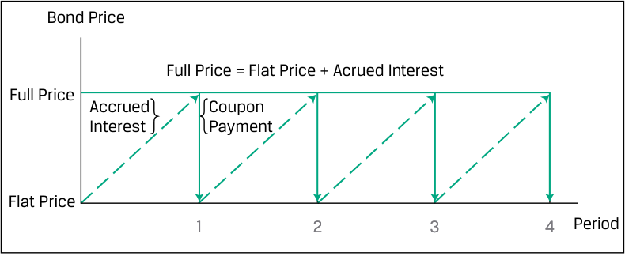
Chú thích hình ảnh: Đồ thị minh họa Giá trái phiếu (Bond Price) qua các kỳ trả lãi (Period 1, 2, 3, 4): - Giá gộp (Full Price) = Giá tịnh (Flat Price) + Lãi tích lũy (Accrued Interest). - Trong mỗi kỳ, Lãi tích lũy tăng dần đều làm Giá gộp tăng hình răng cưa và rơi xuống bằng Giá tịnh ngay khi Thanh toán coupon (Coupon Payment) được thực hiện.
The accrued interest is the portion of the next coupon payment owed to the seller of a bond, because although the seller held the bond for a partial coupon period, the full coupon will be received by the buyer. To calculate accrued interest, we determine the fractional amount by counting the days in the period. If the coupon period has T days between payment dates and t days have passed since the last payment, the accrued interest is calculated using Equation 4:
Lãi tích lũy (accrued interest) là phần của khoản thanh toán coupon tiếp theo thuộc về người bán trái phiếu, bởi vì mặc dù người bán đã nắm giữ trái phiếu trong một phần của kỳ trả lãi coupon, toàn bộ khoản coupon tiếp theo sẽ do người mua nhận. Để tính lãi tích lũy, chúng ta xác định tỷ lệ phân số bằng cách đếm số ngày trong kỳ. Nếu kỳ trả lãi coupon có $T$ ngày giữa các ngày thanh toán và $t$ ngày đã trôi qua kể từ lần thanh toán gần nhất, lãi tích lũy được tính bằng Phương trình 4:
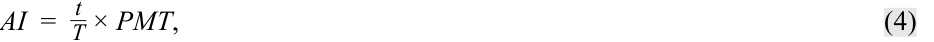
where
trong đó:
-
t = number of days from the prior coupon payment to the settlement date
-
T = number of days in the coupon period
-
t / T = fraction of coupon period that has passed since the prior payment
-
PMT = coupon payment per period
- $t =$ số ngày kể từ lần thanh toán coupon trước đó đến ngày thanh toán giao dịch (settlement date)
- $T =$ tổng số ngày trong kỳ trả lãi coupon
- $t / T =$ phân số (tỷ lệ) của kỳ trả lãi coupon đã trôi qua kể từ lần thanh toán trước đó
- $PMT =$ khoản thanh toán coupon mỗi kỳ
Note that the accrued interest portion of the full price does not depend on the yield-to-maturity. Therefore, it is only the flat price that is affected by a change in interest rates.
Lưu ý rằng phần lãi tích lũy trong giá gộp không phụ thuộc vào lợi suất đáo hạn. Do đó, chỉ có giá tịnh mới bị ảnh hưởng bởi sự thay đổi của lãi suất.
There are multiple approaches for day counting (or “day counts”). The day count is specified by two parameters: how days are counted within a given period and the number of days assumed per period. Two common day count conventions are 30/360 and actual/actual. The 30/360 day count assumes each month has exactly 30 days (although most don’t) and each year has exactly 360 days (although none do). In contrast, the actual/actual day count convention assumes the actual number of days in each month and the actual number of days in a year.
Có nhiều phương pháp tiếp cận để đếm ngày (day counting hay “day counts”). Quy ước đếm ngày được xác định bởi hai tham số: cách thức đếm các ngày trong một kỳ nhất định và số ngày được giả định cho mỗi kỳ. Hai quy ước đếm ngày phổ biến là 30/360 và thực tế/thực tế (actual/actual). Quy ước đếm ngày 30/360 giả định mỗi tháng có đúng 30 ngày (mặc dù hầu hết các tháng không phải vậy) và mỗi năm có đúng 360 ngày (mặc dù không năm nào như vậy). Ngược lại, quy ước đếm ngày thực tế/thực tế (actual/actual) sử dụng số ngày thực tế trong mỗi tháng và số ngày thực tế trong một năm.
EXAMPLE 2
VÍ DỤ 2 (EXAMPLE 2)
Actual/Actual vs. 30/360 Day Count
Quy Ước Đếm Ngày Thực Tế/Thực Tế so với 30/360 (Actual/Actual vs. 30/360 Day Count)
Consider two otherwise identical bonds that pay 4.375% semiannual interest on 15 May and 15 November of each year. One is a government bond with an actual/actual day count and the other is a corporate bond with a 30/360 day count. The actual/actual method uses the actual number of days, including weekends, holidays, and leap days. The 30/360 method assumes 30 days in a month and 360 days in each year.
Xét hai trái phiếu hoàn toàn giống hệt nhau về mọi mặt khác, trả lãi bán niên 4,375%/năm vào ngày 15 tháng 5 và ngày 15 tháng 11 hàng năm. Một trái phiếu là trái phiếu chính phủ với quy ước đếm ngày thực tế/thực tế (actual/actual) và trái phiếu kia là trái phiếu doanh nghiệp với quy ước đếm ngày 30/360. Phương pháp thực tế/thực tế sử dụng số ngày thực tế, bao gồm cả ngày cuối tuần, ngày lễ và ngày nhuận. Phương pháp 30/360 giả định có 30 ngày trong một tháng và 360 ngày trong mỗi năm.
Calculate accrued interest for settlement on 27 June for both bonds.
Tính lãi tích lũy cho việc thanh toán giao dịch vào ngày 27 tháng 6 đối với cả hai trái phiếu.
Accrued interest for the actual/actual bond is the actual number of days between 15 May and 27 June ( t = 43 days) divided by the actual number of days between 15 May and 15 November ( T = 184 days), times the coupon payment.
Lãi tích lũy đối với trái phiếu thực tế/thực tế là số ngày thực tế giữa ngày 15 tháng 5 và ngày 27 tháng 6 ($t = 43$ ngày) chia cho số ngày thực tế giữa ngày 15 tháng 5 và ngày 15 tháng 11 ($T = 184$ ngày), nhân với khoản thanh toán coupon.
For the 30/360 bond, we 42 days between 15 May and 27 June: 15 days between 15 May and 30 May and 27 days between 1 June and 27 June (31 May is not counted in the 30/360 convention). There are assumed to be 180 days in the six-month period between 15 May and 15 November.
Đối với trái phiếu 30/360, chúng ta có 42 ngày giữa ngày 15 tháng 5 và ngày 27 tháng 6: 15 ngày giữa ngày 15 tháng 5 và ngày 30 tháng 5, cộng với 27 ngày giữa ngày 1 tháng 6 và ngày 27 tháng 6 (ngày 31 tháng 5 không được tính trong quy ước 30/360). Giả định có 180 ngày trong kỳ sáu tháng giữa ngày 15 tháng 5 và ngày 15 tháng 11.
| Actual/Actual Bond | 30/360 Bond | |
|---|---|---|
| Days (t) | 43 | 42 |
| Period (T) | 184 | 180 |
| t/T | 0.233696 | 0.233333 |
| Trái Phiếu Thực Tế/Thực Tế (Actual/Actual Bond) | Trái Phiếu 30/360 (30/360 Bond) | |
|---|---|---|
| Số ngày ($t$) | 43 | 42 |
| Kỳ trả lãi ($T$) | 184 | 180 |
| $t/T$ | 0,233696 | 0,233333 |
Accrued interest is calculated as follows:
Actual/actual bond: AI = (43/184) × (4.375/2)
Lãi tích lũy được tính như sau:
= 0.511209 per 100 of par value.
Trái phiếu thực tế/thực tế: $AI = (43/184) \times (4{,}375/2) = 0{,}511209$ trên mỗi 100 đơn vị mệnh giá.
30/360 bond: AI = (42/180) × (4.375/2)
Trái phiếu 30/360: $AI = (42/180) \times (4{,}375/2) = 0{,}510417$ trên mỗi 100 đơn vị mệnh giá.
= 0.510417 per 100 of par value.
The full price of a fixed-rate bond between coupon payments given the market discount rate per period ( r ) is the present value of future cash flows as of the trade settlement date, as shown in Equation 5:
Giá gộp (full price) của một trái phiếu lãi suất cố định giữa các kỳ thanh toán coupon khi biết lãi suất chiết khấu thị trường mỗi kỳ ($r$) là giá trị hiện tại của các dòng tiền tương lai tính tại ngày thanh toán giao dịch, như được thể hiện trong Phương trình 5:
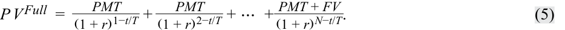
This is very similar to Equation 2. The difference is that the next coupon payment ( PMT ) is discounted for the remainder of the coupon period, which is 1 – t / T . The second coupon payment is discounted for that fraction plus another full period, 2 – t / T .
Phương trình này rất giống với Phương trình 2. Sự khác biệt là khoản thanh toán coupon tiếp theo ($PMT$) được chiết khấu cho phần thời gian còn lại của kỳ trả lãi coupon, tức là $1 - t/T$. Khoản thanh toán coupon thứ hai được chiết khấu cho phần phân số đó cộng thêm một kỳ đầy đủ nữa, tức là $2 - t/T$.
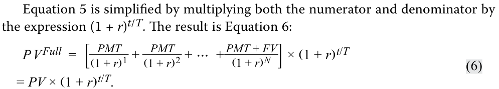
An advantage of Equation 6 is that the expression in the brackets, PV , is easily obtained using the Excel YIELD function because there are N evenly spaced periods. PV here is the present value of future cash flows as of the last coupon date; it is identical to Equation 2 but is not the same as PVFlat .
Phương trình 5 được rút gọn bằng cách nhân cả tử số và mẫu số với biểu thức $(1 + r)^{t/T}$. Kết quả là Phương trình 6:
Một ưu điểm của Phương trình 6 là biểu thức trong ngoặc vuông, $PV$, có thể dễ dàng tính được bằng hàm PV (trong văn bản gốc ghi YIELD, thực tế là hàm PV) của Excel bởi vì có $N$ kỳ cách đều nhau. $PV$ ở đây là giá trị hiện tại của các dòng tiền tương lai tính tại ngày trả lãi coupon gần nhất; nó hoàn toàn giống với Phương trình 2 nhưng không giống với $PV^{Flat}$.
The next two examples demonstrate the calculation of a bond’s flat price, accrued interest, and full price.
Hai ví dụ tiếp theo minh họa phép tính giá tịnh, lãi tích lũy và giá gộp của một trái phiếu.
EXAMPLE 3
VÍ DỤ 3 (EXAMPLE 3)
BRWA Bond—Flat and Full Price
Trái Phiếu BRWA—Giá Tịnh và Giá Gộp (BRWA Bond—Flat and Full Price)
Calculate the flat price and full price of the 3.2% fixed BRWA bond 90 days after the first coupon payment.
Tính giá tịnh và giá gộp của trái phiếu BRWA lãi suất cố định 3,2% vào thời điểm 90 ngày sau lần thanh toán coupon đầu tiên.
First, we calculate the bond’s present value on the coupon date that begins the period during which settlement occurs, using Equation 2 or the PV function in Microsoft Excel or Google Sheets.
Trước tiên, chúng ta tính giá trị hiện tại của trái phiếu vào ngày trả lãi coupon bắt đầu kỳ trả lãi mà trong đó việc thanh toán giao dịch diễn ra, sử dụng Phương trình 2 hoặc hàm PV trong Microsoft Excel hay Google Sheets.
=-PV(0.02,9,1.60,100,0) = 96.735
=-PV(0.02,9,1.60,100,0) = 96.735
Next, we calculate the full price by counting the days using the specified day count convention and using Equation 6.
Number of days from beginning of period until settlement, t = 90 Number of days in the period containing settlement , T = 180 P VFull = PV ×( 1 + r)t/T P VFull = 96.735 ×( 1 + 0.02)90/180 P VFull = 97.698
Tiếp theo, chúng ta tính giá gộp bằng cách đếm số ngày theo quy ước đếm ngày được chỉ định và sử dụng Phương trình 6.
Then we use Equation 4 to calculate accrued interest. AI =t_ T×PMT AI_ =90 180× 1.60
Số ngày từ đầu kỳ cho đến ngày thanh toán giao dịch, $t = 90$ Số ngày trong kỳ chứa ngày thanh toán giao dịch, $T = 180$
AI = 0.80
Sau đó, chúng ta sử dụng Phương trình 4 để tính lãi tích lũy.
Finally, we calculate the flat price using Equation 3 by subtracting the accrued interest from the full price.
P VFull = P VFlat + AI P VFlat = P VFull − AI P VFlat = 97.698 − 0.80 P VFlat = 96.898
Cuối cùng, chúng ta tính giá tịnh bằng Phương trình 3 bằng cách lấy giá gộp trừ đi lãi tích lũy.
Note : Quantities in the calculation are not rounded, though they are shown with three decimal places for presentation purposes. Solutions are rounded to three decimal places.
Lưu ý: Các đại lượng trong phép tính không được làm tròn trong quá trình tính toán, mặc dù chúng được hiển thị với ba chữ số thập phân cho mục đích trình bày. Kết quả cuối cùng được làm tròn đến ba chữ số thập phân.
EXAMPLE 4
VÍ DỤ 4 (EXAMPLE 4)
Romania Bond—Flat and Full Price
Trái Phiếu Romania—Giá Tịnh và Giá Gộp (Romania Bond—Flat and Full Price)
The 4.625% EUR annual, actual/actual fixed-coupon bond issued by Romania maturing 3 April 2049 was introduced in an earlier lesson. Calculate the full price ( PVFull ), the accrued interest ( AI ), and the flat price ( PVFlat ) for settlement on 15 December 2031 assuming an annual yield-to-maturity on that date of 3.50%.
Trái phiếu trả lãi cố định hàng năm 4,625% bằng đồng EUR, quy ước đếm ngày thực tế/thực tế (actual/actual) do Romania phát hành đáo hạn ngày 3 tháng 4 năm 2049 đã được giới thiệu trong bài học trước. Hãy tính giá gộp ($PV^{Full}$), lãi tích lũy ($AI$) và giá tịnh ($PV^{Flat}$) cho ngày thanh toán giao dịch 15 tháng 12 năm 2031, giả định lợi suất đáo hạn năm vào ngày đó là 3,50%.
Solution
Lời giải
Step 1 Calculate PV as of the beginning of the current coupon period for the settlement date:
Bước 1: Tính $PV$ tại thời điểm bắt đầu kỳ trả lãi coupon hiện tại của ngày thanh toán giao dịch:
~~=-PV(rate, nper, pmt, [FV], type)~~ =-PV(0.035,18,4.625,100,0) = 114.838
=-PV(rate, nper, pmt, [FV], type)
=-PV(0.035,18,4.625,100,0) = 114.838
Step 2 Calculate the actual number of days ( t ):
Bước 2: Tính số ngày thực tế ($t$):
| Days | Months |
|---|---|
| 15 | December |
| 27 | April |
| 30 | June, September, November |
| 31 | May, July, August, October |
| 256 | Total |
| Số ngày (Days) | Các tháng (Months) |
|---|---|
| 15 | Tháng 12 (December) |
| 27 | Tháng 4 (April) |
| 30 | Tháng 6, Tháng 9, Tháng 11 (June, September, November) |
| 31 | Tháng 5, Tháng 7, Tháng 8, Tháng 10 (May, July, August, October) |
| 256 | Tổng cộng (Total) |
Step 3 Calculate the actual number of days in the coupon period ( T ):
Bước 3: Tính số ngày thực tế trong kỳ trả lãi coupon ($T$):
| Date at beginning of period | 4/3/2031 |
|---|---|
| Date at end of period | 4/3/2032 |
| Actual number of days inperiod | 366 |
| Ngày bắt đầu kỳ (Date at beginning of period) | 3/4/2031 (4/3/2031) |
|---|---|
| Ngày kết thúc kỳ (Date at end of period) | 3/4/2032 (4/3/2032) |
| Số ngày thực tế trong kỳ (Actual number of days in period) | 366 |
Notice that 2032 is a leap year so it has an extra day.
Lưu ý rằng năm 2032 là năm nhuận nên có thêm một ngày.
Step 4 Use Equation 6 to solve for PVFull :
Bước 4: Sử dụng Phương trình 6 để giải tìm $PV^{Full}$:
P VFull = PV ×( 1 + r) _Tt . P VFull = 114.838 ×( 1 + 0.035) 366256 . _P VFull = 117.635.
Step 5 Use Equation 4 to solve for accrued interest:
Bước 5: Sử dụng Phương trình 4 để giải tìm lãi tích lũy:
AI =t_ T×PMT. AI_ =256 366× 4.625. AI = 3.235.
Step 6 Use Equation 3 to solve for PVFlat :
P VFull = P VFlat + AI . P VFlat = P VFull − AI . P VFlat = 117.635 − 3.235.
Bước 6: Sử dụng Phương trình 3 để giải tìm $PV^{Flat}$:
P VFlat = 114.400.
Note : Quantities in the calculation are not rounded, though they are shown with three decimal places for presentation purposes. Solutions are rounded to three decimal places.
Lưu ý: Các đại lượng trong phép tính không được làm tròn trong quá trình tính toán, mặc dù chúng được hiển thị với ba chữ số thập phân cho mục đích trình bày. Kết quả cuối cùng được làm tròn đến ba chữ số thập phân.
KNOWLEDGE CHECK
KIỂM TRA KIẾN THỨC (KNOWLEDGE CHECK)
- Define yield-to-maturity.
- Định nghĩa lợi suất đáo hạn (yield-to-maturity).
Solution:
Lời giải:
Yield-to-maturity is the internal rate of return on a bond’s cash flows—the uniform interest rate such that when the future cash flows are discounted at that rate, the sum of the present values equals the price of the bond.
Lợi suất đáo hạn là tỷ suất hoàn vốn nội bộ (internal rate of return) trên các dòng tiền của trái phiếu—mức lãi suất đồng nhất sao cho khi các dòng tiền tương lai được chiết khấu theo mức lãi suất đó, tổng giá trị hiện tại sẽ bằng với giá của trái phiếu.
| 2. A non-callable fixed-coupon bond with a maturity in 10 years and a face val- ue of 100 is issued with an annual coupon rate of 2.8% when the applicable market discount rate is also 2.8%. The price of this bond at issuance is: |
|---|
| A.less than 100. |
| B.exactly 100. |
| C.more than 100. Solution: |
| B is correct. When a bond is issued with a coupon rate that equals the mar- ket discount rate, it is priced at par. |
| 3. A non-callable fixed-coupon bond with a maturity in 10 years and a face value of 100 has an annual coupon rate of 2.8%, while the market discount rate is 4.0%. The price of this bond at issuance is: |
| A.less than 100. |
| B.exactly 100. C.more than 100. Solution: |
| A is correct. A bond with a coupon rate lower than the market discount rate will trade at a discount to par, to compensate for its “deficient” coupons relative to the market rate. |
| 4. A sovereign bond that matures on 1 January 2030 pays an annual coupon of 1.2% and has a face value of 100. For a trade settlement date of 1 January 2020, the bonds are priced at 128. Calculate the yield-to-maturity as of the settlement date and price. Solution: –1.390%. We use the YIELD function in Microsoft Excel or Google Sheets: |
| ~~=YIELD(settlement, maturity, rate, pr, redemption,~~ ~~frequency,[basis])~~ =YIELD(DATE(2020,1,1),DATE(2030,1,1),0.012,128,100,1) = -1.390% |
| 5. A bond with a face value of 100 pays an annual coupon of 12% and matures on Ad14 August 2007. It uses the actual/actual day count convention. For a settlement date of 23 December 2002 and an annual YTM of 9.75%, calcu- late the full price, accrued interest, and flat price. Assume an actual/actual day count. Solution: |
| Step 1 Calculate PV as of the beginning of the current coupon period for the settlement date: |
| ~~=-PV(rate, nper, pmt, [FV], type)~~ |
| =-PV(0.0975,5,12,100,0) = 108.584 |
| 2. Một trái phiếu trả lãi cố định không kèm quyền mua lại trước hạn có kỳ hạn 10 năm và mệnh giá 100 được phát hành với lãi suất coupon hàng năm là 2,8% khi lãi suất chiết khấu thị trường hiện hành cũng là 2,8%. Giá của trái phiếu này tại thời điểm phát hành là: |
|---|
| A. nhỏ hơn 100. |
| B. bằng đúng 100. |
| C. lớn hơn 100. Lời giải: |
| B là đáp án đúng. Khi một trái phiếu được phát hành với lãi suất coupon bằng với lãi suất chiết khấu thị trường, nó được định giá ngang mệnh giá (at par). |
| 3. Một trái phiếu trả lãi cố định không kèm quyền mua lại trước hạn có kỳ hạn 10 năm và mệnh giá 100 có lãi suất coupon hàng năm là 2,8%, trong khi lãi suất chiết khấu thị trường là 4,0%. Giá của trái phiếu này tại thời điểm phát hành là: |
| A. nhỏ hơn 100. |
| B. bằng đúng 100. C. lớn hơn 100. Lời giải: |
| A là đáp án đúng. Một trái phiếu có lãi suất coupon thấp hơn lãi suất chiết khấu thị trường sẽ giao dịch ở mức chiết khấu so với mệnh giá (at a discount to par), nhằm bù đắp cho các khoản coupon “thiếu hụt” của nó so với lãi suất thị trường. |
| 4. Một trái phiếu chính phủ trung ương đáo hạn vào ngày 1 tháng 1 năm 2030 trả lãi coupon hàng năm là 1,2% và có mệnh giá là 100. Đối với ngày thanh toán giao dịch là ngày 1 tháng 1 năm 2020, trái phiếu được định giá ở mức 128. Hãy tính lợi suất đáo hạn tại ngày thanh toán giao dịch và mức giá đó. Lời giải: $-1{,}390\%$. Chúng ta sử dụng hàm YIELD trong Microsoft Excel hoặc Google Sheets: |
=YIELD(settlement, maturity, rate, pr, redemption, frequency,[basis])=YIELD(DATE(2020,1,1),DATE(2030,1,1),0.012,128,100,1)= -1.390% |
| 5. Một trái phiếu có mệnh giá 100 trả lãi coupon hàng năm là 12% và đáo hạn vào ngày 14 tháng 8 năm 2007. Trái phiếu này sử dụng quy ước đếm ngày thực tế/thực tế (actual/actual). Đối với ngày thanh toán giao dịch là 23 tháng 12 năm 2002 và YTM hàng năm là 9,75%, hãy tính giá gộp, lãi tích lũy và giá tịnh. Giả định quy ước đếm ngày thực tế/thực tế. Lời giải: |
| Bước 1: Tính $PV$ tại thời điểm bắt đầu kỳ trả lãi coupon hiện tại của ngày thanh toán giao dịch: |
=-PV(rate, nper, pmt, [FV], type) |
=-PV(0.0975,5,12,100,0)= 108.584 |
Step 2 Calculate the actual number of days ( t ):
Bước 2: Tính số ngày thực tế ($t$):
| Month | Days |
|---|---|
| August | 17 |
| September | 30 |
| October | 31 |
| November | 30 |
| December | 23 |
| Total | 131 |
| Tháng (Month) | Số ngày (Days) |
|---|---|
| Tháng 8 (August) | 17 |
| Tháng 9 (September) | 30 |
| Tháng 10 (October) | 31 |
| Tháng 11 (November) | 30 |
| Tháng 12 (December) | 23 |
| Tổng cộng (Total) | 131 |
Step 3 Calculate the actual number of days in the coupon period ( T ):
Bước 3: Tính số ngày thực tế trong kỳ trả lãi coupon ($T$):
| Date at beginning of period | 8/14/2002 |
|---|---|
| Date at end of period | 8/14/2003 |
| Actual number of days inperiod | 365 |
| Ngày bắt đầu kỳ (Date at beginning of period) | 14/8/2002 (8/14/2002) |
|---|---|
| Ngày kết thúc kỳ (Date at end of period) | 14/8/2003 (8/14/2003) |
| Số ngày thực tế trong kỳ (Actual number of days in period) | 365 |
Step 4 Use Equation 6 to solve for PVFull :
Bước 4: Sử dụng Phương trình 6 để giải tìm $PV^{Full}$:
- P VFull = PV ×( 1 + r) _Tt .
P VFull = 108.584 ×( 1 + 0.0975) _365131 .
- $PV^{Full} = PV \times (1 + r)^{\frac{t}{T}}$.
P VFull = 112.271.
Bước 5: Sử dụng Phương trình 4 để giải tìm lãi tích lũy:
Step 5 Use Equation 4 to solve for accrued interest:
Bước 6: Sử dụng Phương trình 3 để giải tìm $PV^{Flat}$:
AI =t_ T×PMT.
AI_ =131 365× 12.
- $PV^{Full} = PV^{Flat} + AI$.
- $PV^{Flat} = PV^{Full} - AI$.
- $PV^{Flat} = 112{,}271 - 4{,}307$.
- $PV^{Flat} = 107{,}964$.
AI = 4.307.
Lưu ý: Các đại lượng trong phép tính không được làm tròn trong quá trình tính toán, mặc dù chúng được hiển thị với ba chữ số thập phân cho mục đích trình bày. Kết quả cuối cùng được làm tròn đến ba chữ số thập phân.
Step 6 Use Equation 3 to solve for PVFlat :
- Thực hiện các phép tính tương tự cho cùng trái phiếu ở Câu hỏi 5, nhưng sử dụng quy ước đếm ngày 30/360.
-
P VFull = P VFlat + AI .
-
P VFlat = P VFull − AI .
-
P VFlat = 112.271 − 4.307.
-
P VFlat = 107.964.
Note : Quantities in the calculation are not rounded, though they are shown with three decimal places for presentation purposes. Solutions are rounded to three decimal places.
Lời giải:
- Perform the same calculations for the same bond in Question 5, but use a 30/360 day count convention. Solution:
-
Step 1 Calculate PV as of the beginning of the current coupon period for the settlement date:
-
~~=-PV(rate, nper, pmt, [FV], type)~~
-
=-PV(0.0975,5,12,100,0)
- Bước 1: Tính $PV$ tại thời điểm bắt đầu kỳ trả lãi coupon hiện tại của ngày thanh toán giao dịch:
=-PV(rate, nper, pmt, [FV], type)=-PV(0.0975,5,12,100,0)